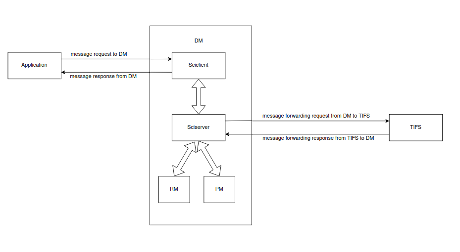

|
J722S MCU+ SDK
11.02.02
|
|
|
J722S MCU+ SDK
11.02.02
|
|
Once this application is enabled, it tracks the TISCI message flow from HLOS that requests the sciserver service to DM, and also tracks message forwarding from DM to TIFS and messages received from TIFS to DM.

DM firmware contains Sciserver, Sciclient, and RM/PM modules, where only RM/PM has debug support. No debug support is available for Sciserver/Sciclient, resulting in a lack of information about where the message request failed from HLOS to DM and about the message forwarding from DM to TIFS, making it difficult to trace the exact point of failure. This lack of visibility leads to a critical issue where failure in TIFS is mistakenly attributed to DM, making debugging difficult and resulting in misleading information. Implementing trace logging for these drivers will provide a structured way to monitor message transitions at key points, ensuring an accurate source of information in the event of an error or failure. This application will help identify failures precisely, reducing debugging time.
Trace logs are added in Sciclient/Sciserver at each point, starting from the requesting to DM by HLOS to the message forwarding from DM to TIFS. Using the debug application, the following information will be traced ....
◦ Message Request ID/type
◦ Host ID information
◦ Message parameters
◦ Whether DM/TIFS will process the request
◦ ACK/NACK from TIFS/RM_PM functionality
◦ Response sent back to the host
By default this debug application is not part of DM firmware, We should enable this application inorder to get the logs.
Follow these steps to enable this application in RTOS:
1.Run gen-buildfiles to generate autogenerated files.
2.Build libraries with the flag ENABLE_DM_TRACE=yes.
3.Build the sciclient_get_version with the flag ENABLE_DM_TRACE=yes.
4.Copy the generated .out and .rprc binaries from:
{MCU_PLUS_SDK_PATH}/examples/drivers/sciclient/sciclient_get_version/j722s-evm/wkup-r5fss0-0_freertos/ti-arm-clang/ to {MCU_PLUS_SDK_PATH}/tools/sysfw/sciserver_binary/j722s/
5.Now build SBL and your DM application and Load them into your SD card.
Follow these steps to enable this application in Linux:
1.Run gen-buildfiles to generate autogenerated files.
2.Build libraries with the flag ENABLE_DM_TRACE=yes.
3.Build ipc_rpmsg_echo_linux with the flag ENABLE_DM_TRACE=yes.
4.Copy the generated .xer5f binaries from {MCU_PLUS_SDK_PATH}/examples/drivers/ipc/ipc_rpmsg_echo_linux/j722s-evm/wkup-r5fss0-0_freertos/ti-arm-clang/ to {ti-linux-firmware_folder}/ti-dm/j722s/
and rename it to ipc_echo_testb_mcu1_0_release_strip.xer5f
5.Rebuild tispl.bin with updated DM and replace tispl in linux boot flow.
 1.8.20
1.8.20